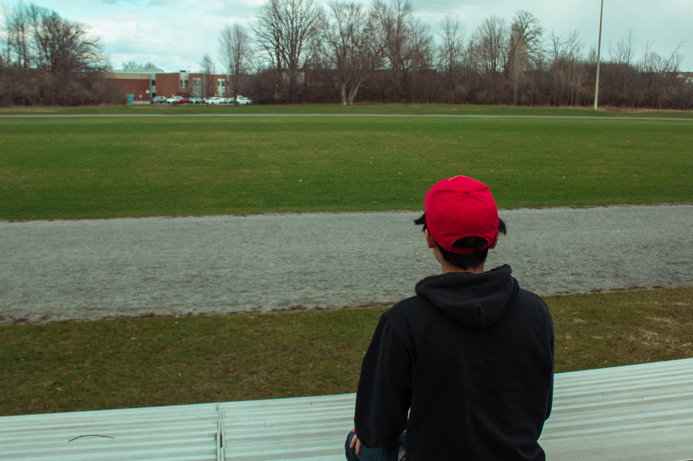
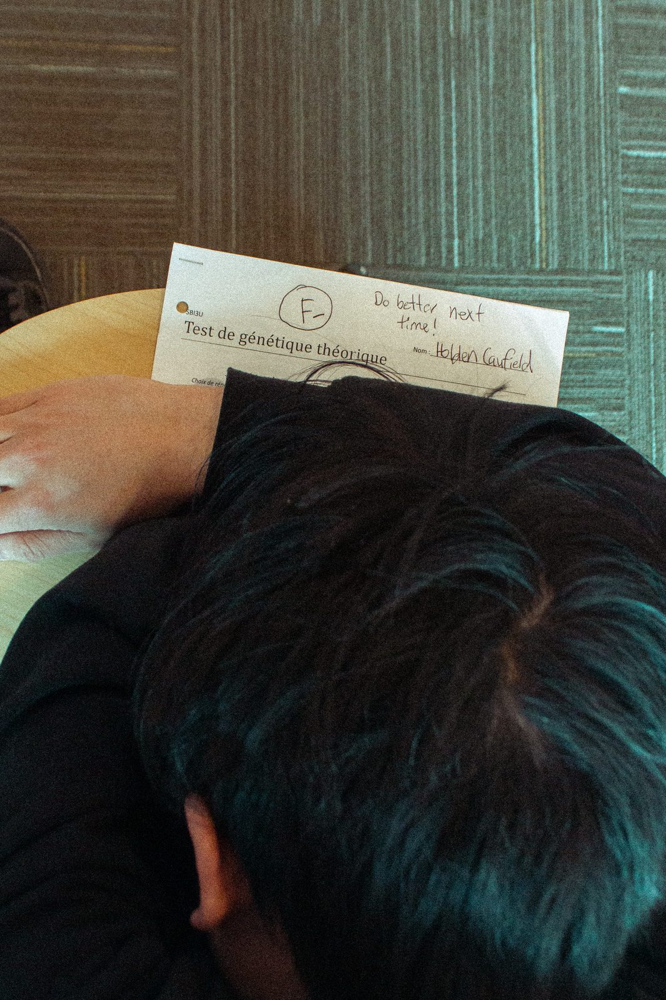
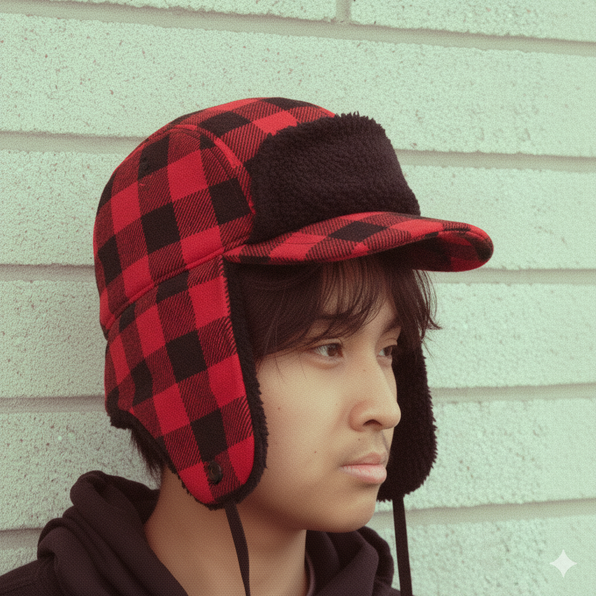
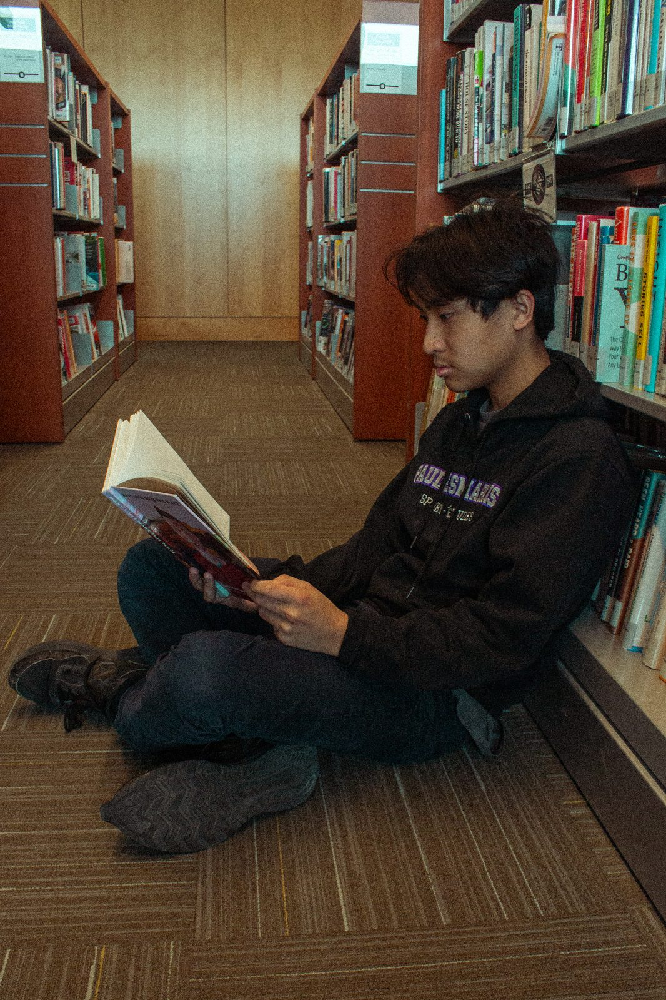
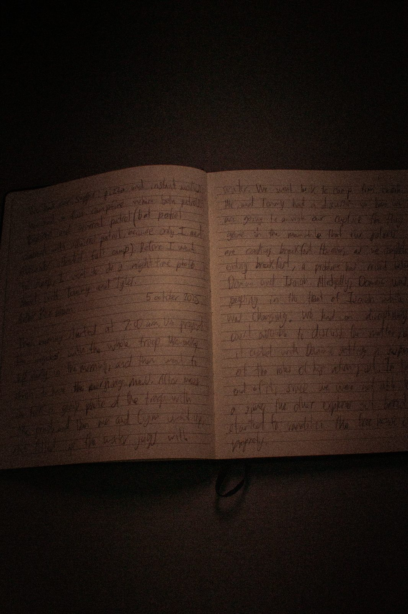
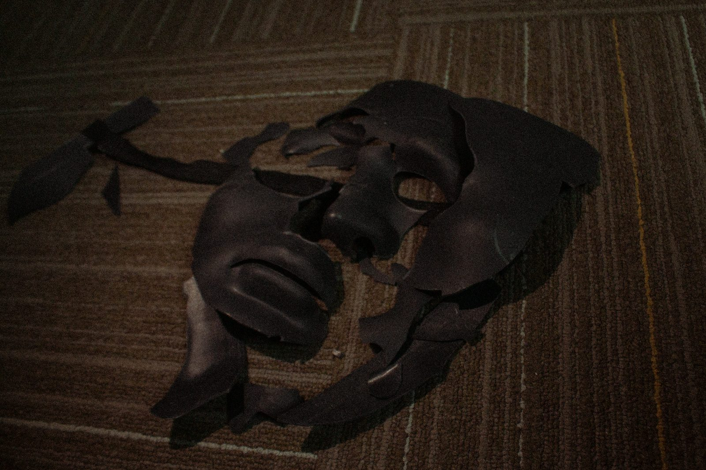
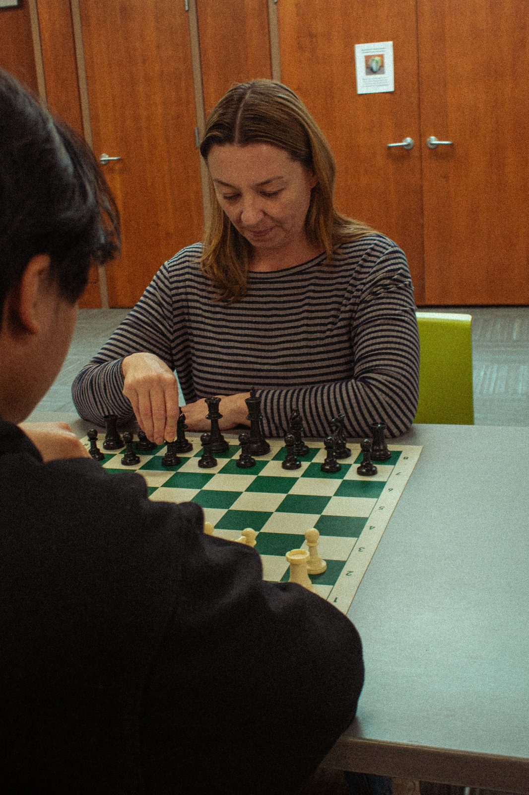
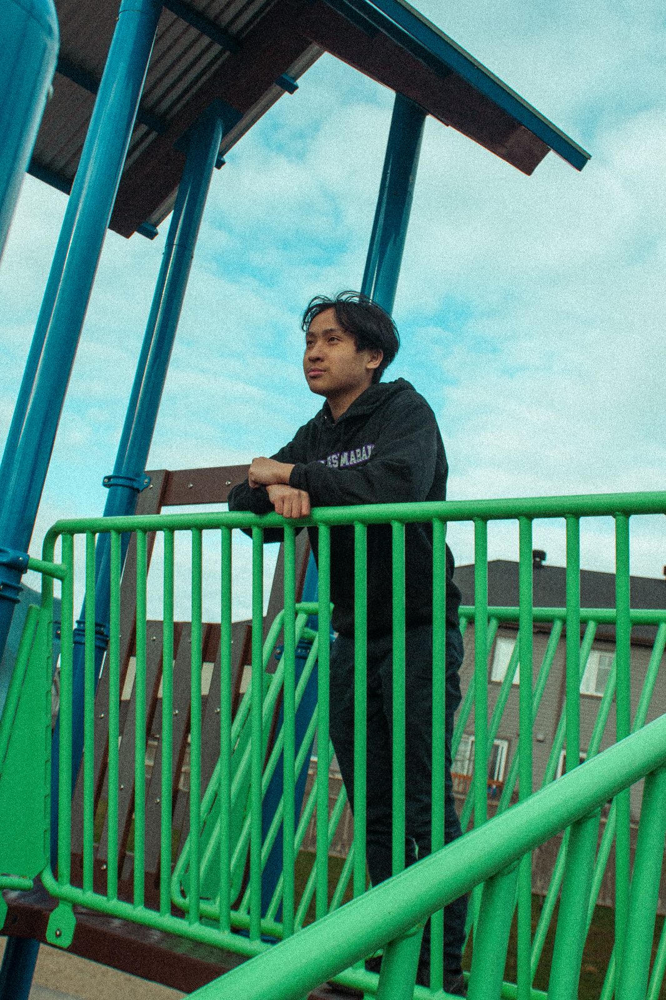
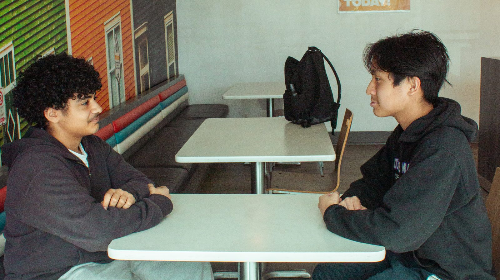

USE ← → · ESC TO CLOSE
LOADING REEL
NINE PHOTOGRAPHS, ONE LOUSY WEEK
A NOTE FROM THE AUTHOR
So here's the deal. I was supposed to write some composition for English class and I didn't want to, so I took pictures instead. Nine of them. Some of them are from that Saturday at Pencey before everything went to hell, and some of them are from after. I arranged them in order, more or less. Each one is from a different part of what happened, and I put a little explanation under each so you'd know what you were looking at. If you don't want to read all that, fine, just look at the pictures. Click on one if you want to see it bigger. If you don't want to do any of that either, I don't know what you're doing here. Go read a magazine or something.

Everybody's at the game like it actually matters. Kills me.
CH. 01 N° 01 / 09Chapter 1 · Alienation
This is from the Saturday I got kicked out. There was a big football game, Pencey against Saxon Hall. You were supposed to care if we won or I don't know what — commit suicide if we lost, probably. So I went up to the top of Thomsen Hill instead, behind that crumby cannon that was in the Revolutionary War. Everybody else was down there freezing and yelling their heads off. I stood there by myself and I could see practically the whole field from up there. That's how I like to look at things, honestly. From a little ways off. Close enough to see, far enough that nobody can ask you to join in.

I practically told him to fail me. Might as well.
CH. 02 N° 02 / 09Chapter 2 · Apathy & Grief
So here's an F-minus on a test, with "Do better next time!" written in the corner like that's going to fix anything. I'm flunking four out of five subjects this term. Four. I wrote a note to old Spencer, my history teacher, at the bottom of my exam, telling him it was all right with me if he flunked me, since I was flunking everything except English anyway. I don't know why I did that. I think sometimes I just want people to know I'm not trying, so they'll stop expecting things of me. It's the phoniest thing in the world to pretend you care about the Egyptians when you don't.

I look pretty good in this hat. Don't argue.
CH. 03 N° 03 / 09Chapter 3 · Identity
This is the hat I bought in New York that morning I lost the foils on the subway. A buck, if you want to know what it cost me. It's got one of those long peaks I like to turn around to the back. It looks corny, I know. Ackley called it a deer-shooting hat, for Chrissake. I told him it was a people-shooting hat, which it isn't, but I liked saying it. I wear it when I feel like it and I don't when I don't. Phoebe's going to end up with it eventually. That's what hats are for, in the end.

Best thing is a book that makes you want to call the author.
CH. 03 N° 04 / 09Chapter 3 · Connection
People at Pencey used to say I didn't read, which was a lie. I read a lot. I finished this whole Thomas Hardy book, and that one about the pilot flying out of Africa, and Ring Lardner, and I can tell you what I liked about every one of them. What kills me about a really good book is when you finish it and you wish the guy who wrote it was a terrific friend of yours, and you could call him up on the phone whenever you felt like it. That doesn't happen too often. Most books, you're glad when they're over. But when it does happen, it's the best thing there is. Better than people, sometimes, if I'm being honest.
"I felt so lonesome, all of a sudden.
I almost wished I was dead."

I wrote about something that actually mattered for a change.
CH. 05 N° 05 / 09Chapter 5 · Memory
Stradlater asked me to write a descriptive composition for him because he had a date with Jane Gallagher and he was too lazy to do his own homework. He told me to pick something descriptive, a room or a house. I wrote about Allie's baseball mitt instead, the left-handed fielder's mitt Allie wrote poems all over in green ink so he'd have something to read out in the field when nobody was up at bat. I know that wasn't a room or a house. I wrote it anyway. Stradlater read it when he got back and got sore at me and I got sore at him, and I ripped it up. That's what you get for writing about something that actually mattered.

I broke all the goddam windows with my fist once. Not kidding.
CH. 05 N° 06 / 09Chapter 5 · Grief & Rage
The night Allie died I was out in the garage and I broke all the windows with my fist. Every one of them. I was going to break the station wagon windows too but my hand was already busted and I couldn't make a fist anymore. It was a stupid thing to do, I know that. My hand still hurts sometimes when it rains. But I couldn't think of anything else to do, which is probably the point of the whole thing. You do stupid things because standing there not doing anything is worse. Anyway I took a picture of something broken because I wanted to, and because I'm not going to take a picture of my actual hand.

She used to keep her kings in the back row. I loved that.
CH. 04 N° 07 / 09Chapter 4 · Jane
I used to play checkers with Jane Gallagher the summer we were neighbors in Maine. She used to keep all her kings in the back row. She'd get them all lined up there and then she wouldn't use them — she just liked the way they looked. I've seen people do a lot of things, and I've never seen anybody do anything quite like that. She was a funny girl, old Jane. Not funny-looking. Just funny in the way nobody else was. Stradlater had a date with her the night I left Pencey, which I didn't take too well, on account of what he probably tried to do. I should've called her from New York. I kept almost doing it and not doing it.

Certain things should stay the way they are.
CH. 16 N° 08 / 09Chapter 16 · Innocence
Near Phoebe's school there's a playground where kids climb all over the thing like it's going to hold them up forever, and half the time it is. I like kids on playgrounds. I like the noise they make. I don't like most grownups on playgrounds because they're always watching their kids like they're worried something bad is going to happen, and that ruins the whole thing. Certain things, honestly — a playground, a museum, a sister in her pajamas — they should stay exactly the way they are, and you shouldn't be allowed to touch them. I know that's not how it works. But it's how it should work, if anybody was asking me.

He always acted like he knew everything.
CH. 19 N° 09 / 09Chapter 19 · Phonies
Carl Luce was my Student Adviser back at Whooton. I called him up and he agreed to meet me for drinks at the Wicker Bar. He's one of those guys who knows a little more than you do about everything and makes sure you know it. The minute he sat down he told me I hadn't changed a bit, which he meant as an insult. I asked him too many personal questions. I do that when I'm nervous. He told me my mind was immature and that I should go see a psychoanalyst, which is what his father does for a living. Then he left. I ordered another drink, and another one after that. You can't make a guy like Carl Luce like you. You can only bore him a little slower than the next guy does.
"I was drunk as hell.
I really was."
I don't really know how you're supposed to end one of these things. I took nine pictures and I wrote what I wrote, and if any of it made any sense to you, good, and if it didn't, I don't know what to tell you. About the only thing I'd say is, don't tell anybody anything. If you do, you start missing everybody. Even old Stradlater. Even old Ackley, for Chrissake. It's a funny thing.
→ ABOUT ME, I GUESSUSE ← → · ESC TO CLOSE